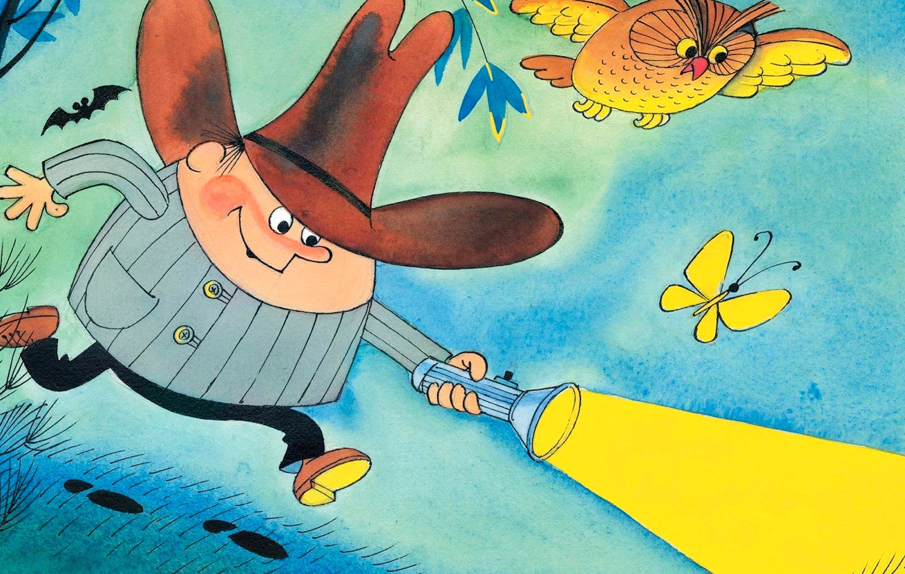

Колобок идет по следу
Эдуард Успенский
В глубине центрального парка, там, где кончается асфальт и начинается строительство многоэтажного гаража Горгартрансхоза, стоит одноэтажный таинственный дом с вывеской «НПДД».
Это Неотложный Пункт Добрых Дел, и главный в нём — Колобок. Ему во всём помогает верный друг и товарищ — Булочкин. Они занимаются раскрытием мелких преступлений и нарушений. (Принимают заказы от населения).
То, что для дружинников слишком сложно, а для милиции слишком просто, в самый раз для Колобка.
Он в детстве в деревне
У бабушки жил.
Была она домохозяйкой.
А дедушка в поле
Стога сторожил
С огромной охотничьей лайкой.
И жить — поживать бы
Ему хорошо,
Да дома ему не сидится.
И вот он от бабушки
В город ушёл,
В милиции начал трудиться.
Он двадцать пять лет
За порядком следил,
Любому мешал преступленью.
На чистую воду
Он тех выводил,
Кто жить не давал населенью.
Сейчас в детском парке
Работает он.
Хоть лет ему много,
Но всё же
Теперь воспитаньем детей увлечён,
Подростков и молодёжи.
И любит и ценит
Его малышня,
И знают все дяди и тёти:
— У вас неприятность?
— Зовите меня.
Всегда Колобок на работе.
Колобок был сова, а Булочкин — зяблик. Но Колобок был начальник, и поэтому они больше работали по вечерам. Только не думайте, что днём они не работали. Они работали и днём, и вечером, и утром… Просто больше всего они любили работать вечером.
Сегодняшний вечер был вялым и тёплым. Телефон звонил редко — один раз в час.
Вот он опять зазвонил вялым, безынициативным звонком. Булочкин немедленно цапнул трубку.
— Алло! Аппарат Колобка у аппарата! — бодро сказал он, пытаясь вдохнуть жизнь в вялое течение событий.
Но ничего не вышло. Трубка сказала вялым женским голосом:
— Это НПДД? — Так точно!
— НПДД, НПДД, у нас на чердаке кошка мяучит музыку Шаинского, а мы с внучкой Бетховена разучиваем. Помогите!
— Заказ принят! — сказал Булочкин. — Кошку поймаем и переучим на Бетховена. Сообщайте адрес.
Он записал адрес в книгу заказов и спросил Колобка:
— Шеф, можно отправляться?
— Подождите, Булочкин, ещё не вечер! — сказал Колобок, хотя уже был вечер.
— Думаю, что сегодня будут более интересные дела.
И точно: телефон зазвонил более инициативно.
— Колобок, Колобок, — сказал мужской голос, — у нас пропала собака.
Колобок подвинул к себе печатную машинку:
— Давайте словесный портрет.
— Чей?
— Собаки разумеется.
— Собака породы овчарка, начал голос. — Высокая, средней лохматости. По окраске брюнето-шатенка. Повышенной зубастости. Имеет шесть медалей. Охраняла здание вместе со сторожем. Кличка Рекс. Сторож тоже пропал.
Колобок всё это быстро напечатал.
— Давайте словесный портрет.
— Чей? — спросил голос.
— Сторожа.
— Высокий, с намёком на лысину. Зовут дядя Коля. Характер рязанский, покладистый. Имеет сына десяти лет. Сын тоже пропал. Дать словесный портрет?
— Достаточно, — сказал Колобок голосу. — Мне всё ясно. А кем вы ему доводитесь?
— Кому — сыну или сторожу?
— Рексу!
— Я — директор учреждения. Дать словесный портрет?
— Спасибо, не надо. Я всё понял. Товарищ директор, берите свою жену и детей и приезжайте в наш парк. Сегодня здесь выставка служебно-сторожевых собак, найдёте и вашего сторожа, и вашего Рекса.
Человек в телефоне ужасно обрадовался и долго повторял:
— Спасибо, товарищ Колобок. Спасибо, товарищ Колобок.
— Пожалуйста, товарищ директор склада, — сказал Колобок и повесил трубку.
Но телефон моментально зазвонил снова:
— А как вы догадались, что я директор склада? А не директор музея или театра?
— Очень просто. Театры и музеи у нас собаки повышенной зубастости не охраняют. Привет вашему дяде Коле.
Булочкин, как всегда, был потрясён железной логикой Колобка. Он взял книгу заказов и вписал туда, как было раскрыто это таинственное исчезновение, как была найдена сторожевая собака буквально в присутствии заказчика. И даже более того — буквально без присутствия заказчика.
Но Колобок был недоволен:
— Это всё семечки! Ничего интересного. Но чует моё сердце — где-то зреет серьёзное преступление.
И оно зрело. Созревало и наливалось. В это время в другом конце города…
В это время в другом конце парка по аллее шёл мороженщик. Каких много. Обыкновенный труженик тележки. Но шёл он без тележки и громко кричал:
— Караул! Преступление века!
Прохожие с любопытством смотрели на него. И он кричал дальше:
— Похищено сто пачек мороженого! Ограбление пенсионера. Милиция бессильна.
— Почему? — спрашивали прохожие.
— Они не очень любят мороженое. Если бы пельмени пропали…
И он гордо шёл дальше в направлении НПДД, сообщая всем о происшедшем. Человек изъяснялся с людьми как бы заголовками газет:
— В городе действует организация!
— Сегодня — мороженое, завтра — «Дом игрушки».
— Планета спрашивает: «Кто будет отвечать?»
Крико-вопли всё больше приближались к НПДД, где нервно разгуливал Колобок в ожидании крупного дела. Он был в безрукавке, в мягких валенках, сделанных на заказ, в тёплой кепке, потому что приближалась осень.
И вот на пороге возник мороженщик.
— Я говорю от имени тружеников планеты Земля! Мороженого больше не будет!
— А что? — спросил Колобок. — Закрыли ваш хладокомбинат?
— В городе действует шайка! Милиция бессильна.
— Будем вооружать население! — спокойно и с достоинством ответил Булочкин, показывая мороженщику, что есть… имеется выход, что не всё ещё потеряно.
— Фамилия? — строго спросил Колобок.
— Я — труженик планеты Земля.
— Фамилия, — повторил Колобок.
— Коржиков.
— Рассказывайте всё по порядку, товарищ Коржиков, — приказал Колобок.
— И обращайте внимание на подозрительные подробности, — добавил Булочкин.
— Хорошо, — сказал мороженщик. — Дело было так. Светило солнце.
Я шёл и продавал мороженое. Кругом гуляли покупатели, целая улица покупателей. Я пел песню:
Маши, Даши и Олежки
Приглашаются к тележке.
Для чего был создан мир?
Для того, чтоб есть пломбир.
Поскорей спешите к тачке
И берите по две пачки.
Вам стакан и вам стакан,
Вот и выполнили план!
Сам стахановец Стаханов
Взял однажды пять стаканов,
Угостил своих друзей,
И они пошли в музей.
Знайте, взрослые и дети,
Есть в космической ракете
Километр макарон
И пломбира десять тонн.
Потолкуйте с силачами,
Ведь они не калачами
Укрепляют силу рук,
А мороженым, мой друг.
Поскорей спешите к тачке
И берите по три пачки.
Вам стакан и вам стакан,
Вот и выполнили план.
Это друг, не так уж глупо
Эскимо съесть вместо супа.
Раз и два — и весь обед,
И посуды грязной нет.
Мороженое, мороженое
Совсем немного стоит,
Мороженое, мороженое
Вам двери всё откроет.
— А подозрительные подробности? — напомнил Булочкин.
— Хорошо, — понял мороженщик. — Светило подозрительное солнце. Дул подозрительный такой ветер. Кругом гуляли подозрительные типы. Целая улица типов.
— Иностранных инопланетян не было?
— Были, — сразу согласился мороженщик. — Были подозрительные инопланетяне, замаскированные под наших неподозрительных прохожих.
— А дальше? — спросил Колобок.
— Вдруг замяукал подозрительный котёнок. Я подозрительно пошёл за ним. И кто-то украл мою подозрительную тележку.
Колобок выслушал всё это и сказал:
— Ещё раз, пожалуйста, всё расскажите. Только подробнее, пожалуйста.
— Хорошо, — согласился мороженщик Коржиков. — Светило такое подробное солнце. Дул такой подробный ветер. Кругом подробно гуляли такие подробные прохожие. Потом замяукал такой подробный котёнок. Я подробно за ним пошёл. И кто-то украл мою подробную тележку.
— Не густо! — сказал Колобок.
— Точно! — согласился мороженщик. — Светило такое негустое солнце. Дул негустой такой подозрительный ветер. Кругом негусто гуляли такие негустые прохожие. Потом замяукал такой негустой котёнок. Я негусто так пошёл за ним, и кто-то украл мою негустую тележку.
— Ну что? — спросил Колобок у Булочкина.
— Туманно, шеф! — сказал тот.
Мороженщик тотчас же согласился:
— Светило такое туманное солнце. Дул такой туманный ветер. Кругом туманно так прогуливались прохожие. Потом замяукал такой затуманенный котёнок. Я затуманенно пошёл за ним. И кто-то в тумане украл мою тележку. Что теперь будет?
— Всё будет в порядке, — сказал Колобок. Дело поручаем лучшему специалисту. Булочкин, на выход!
— Есть! — ответил Булочкин. — Сверим часы.
— Сверим.
Все стали сверять часы. Часы Колобка и Булочкина бились секунда в секунду, а часы мороженщика остались лежать в тележке, в ящике для денег.
— Куда сдать котёнка? — спросил мороженщик.
— Какого котёнка? — спросил Колобок.
— Которого я нашёл на месте преступления, — сказал Коржиков.
Он вынул из кармана фартука замечательного рыжего котёнка. Колобок посмотрел на котёнка в увеличительное стекло.
— Сибирский! — сказал он.
— Может быть, преступники из Сибири? — предположил Булочкин. — И надо его оставить в деле.
— Забирайте его с собой! — приказал Колобок. — Может, он наведёт вас на след.
Булочкин и мороженщик ушли. Опускавшееся за парк солнце заливало всё золотом. Солнечный луч, попавший в затылок Колобка, наполнил его жёлтым свечением. Колобок напоминал подсвеченную изнутри головку сыра и чувствовал себя неловко.
Он задёрнул шторы, взял в руки балалайку и заиграл. Все, кто давно знал Колобка, поняли: Колобок думает. И затихло всё вокруг НПДД.
Тем временем Булочкин и Коржиков приблизились к месту пропажи. В голове у Булочкина вертелись последние слова Колобка: «Он может навести вас на след». Поэтому он попросил у мороженщика котёнка, опустил его на землю и приказал: «След!»
Котёнок с места в карьер пробежал сто метров к ближайшей урне, сел около неё и стал жевать селёдочный хвост.
— Ты неправильно нас понял, — сказал Булочкин. — Нам не нужна селёдка. Нам нужна тележка.
Котёнок с места не двигался и усиленно хрустел селёдочным хвостом.
Вдруг мороженщик схватил за руку Булочкина:
— Смотрите!
По аллее шла дворничиха с метёлкой и толкала перед собой тележку с мороженым.
— Это моя тележка! — сказал Коржиков.
Булочкин включил походную рацию:
— Колобок, Колобок, мы вышли на преступника. Будем брать.
— Берите, — шёпотом сказал Колобок. — Но осторожнее, смотрите, чтобы не взяли вас.
— Преступник(ца) вооружён(а)! — тихим лозунгом сказал Коржиков Булочкину.
— Чем вооружён? — переспросил Булочкин,
— Метлой вооружён, — ответил мороженщик.
— Будем брать вместе с метлой! — решительно сказал Булочкин. — Применяю отвлекающий приём.
Он подошёл вплотную к дворничихе с тележкой и сказал, показывая на небо:
— Смотрите: лопаты летят!
— Какие лопаты? Почему летят? — удивилась дворничиха и стала внимательно изучать небо.
В эту секунду Булочкин пристегнул её цепочкой с почтовым замком к ручке тележки. Такими цепочками сельские велосипедисты приковывают свои велосипеды к поручням магазинов.
— Колобок, Колобок! — сразу же сообщил он в радиотелефон. — Опасная преступница задержана… Ваша игра проиграна! — обернулся он к дворничихе.
— Будем вас сдавать в милицию.
— Какая игра? — удивилась дворничиха. — Я и сама шла сдавать эту тележку в милицию.
— Булочкин, Булочкин, немедленно освободите эту блондинку в очках и принесите ей извинения.
Булочкин оторопел. Вот это да! На таком расстоянии Колобок узнал, что дворничиха — блондинка. Он отстегнул дворничиху и произнёс в микрофон:
— Продолжаем расследование.
— Ой! — вдруг сказала женщина Булочкину и Коржикову. — Смотрите: лопаты повернули и назад летят.
— Какие лопаты? — удивились потерпевший и расследующий. — Зачем повернули?
— Чтобы проучить кое-кого! — ответила дворничиха и махнула метлой по ногам двух мужчин.
Они оба рухнули как подкошенные.
— Продолжаем работу, — сказал неунывающий Булочкин.
— Работа продолжается! — оформил его мысль в лозунг мороженщик Коржиков. — Несмотря ни на что!
Они встали на ноги, и Булочкин приступил к осмотру тележки и составлению версий.
— Начинаем предварительный досмотр. Тележка цела? Колёса на месте?
— На месте, — ответил мороженщик Коржиков. — А где же им быть? Кому они нужны, такие кривоногие?
— Вы мне вопросов не задавайте, — одёрнул его Булочкин. — Отвечайте чётко, по-военному: «Так точно». Повторяю: Тележка цела? Колёса на месте?
— Так точно, по-военному. Кому они нужны, такие кривоногие?
— У вас есть версии?
— Так точно. Никаких.
— А у меня есть. Сразу видно, что вы не в нашей системе работаете. Скорее всего, действовала шайка. Интересно, сколько их было. Сколько мороженого исчезло?
— Пятьдесят пачек. Остальные здесь, — ответил мороженщик. — И ещё здесь лежит треугольная пуговица с двумя дырочками, металлический рубль, мои часы и вязаная шапка с помпончиком.
Булочкин включил рацию и доложил обо всём Колобку.
— Продолжайте поиски, — сказал Колобок. — Я буду разрабатывать свою версию.
Всё ниже к закату склонялось подозрительное солнце. В парке стихало, и всё сильнее слышен был шум города.
Подозрительные прохожие покидали парк вместе с подозрительными детьми. Булочкин думал. Потом он спросил:
— Тележка отсутствовала полчаса. Сколько пачек мороженого может съесть один человеко-преступник за это время?
— Так точно, не знаю! — сказал мороженщик.
— Нужно узнать. Выяснив это, мы узнаем, сколько человеко-преступников было. Проведём следственный эксперимент.
— Можно принять участие в эксперименте? — спросил Коржиков.
— Вы всё продумали?
— Всё.
— Тогда разрешаю. Сверим часы.
Часы Булочкина показывали семь часов, часы Коржикова замёрзли и ничего не показывали из-за инея. Тем не менее эксперимент начался. Надо было выяснить, сколько было человек расхитителей государственного мороженого.
Они ели мороженое, а в голове у них звучала песня.
Пусть порою грозит нам опасность,
И стреляют враги каждый миг,
Мы работаем и вносим ясность
В этот сложный, запутанный мир.
Если спросят, мы ответим,
Что желаем счастья детям,
Каруселей и зверей
И незапертых дверей.
Не едим мы и недосыпаем,
Можем дров без трудов наломать.
Пол-Москвы пробежим за трамваем,
Если надо кого-то поймать.
Если спросят, мы ответим
Что желаем счастья детям,
Каруселей и зверей
И незапертых дверей.
Вместе с нами людей миллионы,
И никто из них не одинок,
Берегитесь, враги и шпионы,
Трудный поиск ведёт Колобок.
Если спросят, мы ответим,
Что желаем счастья детям,
Каруселей и зверей
И незапертых дверей.
Освещённые подозрительным солнцем, Булочкин и Коржиков доедали мороженое. А Колобок играл на балалайке в уютном НПДД.
— Шапочка в тележке, что бы это значило?
Под весёлую мелодию плясали комары на светлом окне. Телефон молчал. Очевидно, собака повышенной зубастости нашлась вместе со своим брюнето-шатеновым сторожем. И тут Колобка осенило. Он включил переговорное устройство.
— Булочкин, Булочкин, что у вас на голове?
— Кепка, шеф. Фуражного типа.
— Очень хорошо. Попробуйте достать из тележки эту вязаную шапочку.
— Слушаюсь, шеф.
Послышался треск открываемой дверцы, потом голос Булочкина:
— Готово, шеф.
— Так. Что теперь у вас на голове?
— Вязаная шапочка, шеф.
— Почему?
— Потому что фуражка упала в тележку.
— Отлично, Булочкин. А как с вашими пуговицами? Все на месте?
— Нет, шеф, одна оторвалась и тоже упала.
— Спасибо, Булочкин.
— Можно продолжать эксперимент?
— Можно, продолжайте.
И Булочкин с Коржиковым смело углубились в мороженое.
— Я уже три пачки съел. — сказал Булочкин.
— А я четыре, — сказал Коржиков. — У меня опыта больше.
— Что-то стало холодать! — сказал Булочкин.
— Что-то стало нагреваться! — сказал Коржиков. — У меня жар!
— А у меня озноб!
— Мы заболели. Гибель на трудовом посту! — стал выкрикивать мороженщик. К нему вернулось газетно-заголовочное состояние. — Они не вернутся! Их было двое! Люди жертвуют собой!
Булочкин включил рацию:
— Колобок, ты слышишь нас?
— Внимание, — отвечает Колобок. — Вызываю для вас «скорую помощь». Держитесь.
Булочкин и Коржиков взялись друг за друга. Булочкин сурово молчал, а Коржиков выкрикивал:
— Эксперимент не удался! Их ждёт больница! Планета плачет!
Он даже выкрикнул один лозунг, явно опережающий события:
— Медицина бессильна. Им поможет только чудо!
В парк въехала неотложка с красным крестом на верхней фаре, и наших больных увезли.
И вот уже тихая больничная палата. Не совсем тихая, потому что Коржиков постоянно кричит:
— Колобок о нас забыл! Преступники на свободе! Мороженщики всего мира протестуют! Мы погибаем в больницах, а кое-кто даже не думает о нас.
И тут дверь в палату распахнулась и вошёл Колобок. Он был в белом халате и в тапочках на босу ногу, с трубкой.
— Колобок ни о ком не забывает. Он знает всё.
— Да? — закричал неуёмный Коржиков. — А где же преступники?
— Преступники вокруг нас, — ответил Колобок. — Посмотрите, кто лежит на соседних койках.
И сразу на всех соседних койках встали мальчики.
— Мы больше не будем! — сказали они сиплыми голосами.
— Попались! — закричал мороженщик. — Как же вам не стыдно бесплатно брать государственное мороженое?
— А мы не бесплатно, — сказали мальчики. — Мы рубль положили.
— И котёнка!
— Ха-ха-ха! — сказал Коржиков. — Это планета смеётся. Но котят ещё в банк не принимают! Живая валюта — нужна ли она нам?!
— Нас теперь арестуют? — спросили мальчики.
— Ни за что! — сказал мороженщик Коржиков. — Раз вы признались, я за вас заплачу. Но котёнка я вам не отдам. Я к нему прирос. Продавцы покидают больницы! План ведёт нас в путь!
Он быстро выздоровел и оделся. И ушёл. Колобок и Булочкин ласково смотрели ему вслед и думали: «Как хорошо, что ему хорошо. Значит, не зря мы несём тяжёлую вахту. Пусть всегда будет солнце».
На своих кроватях сидели исправившиеся мальчики и восторженно смотрели на знаменитого Колобка.
— Шеф, — спросил Булочкин, — а как вы догадались, что дворничиха блондинка в очках?
— Очень просто, — сказал Колобок, — мой метод — внимание плюс память. Она же у нас в парке шестой год работает. Её фотография на Доске почёта у входа висит. Рядом с моей, между прочим, товарищ Булочкин.